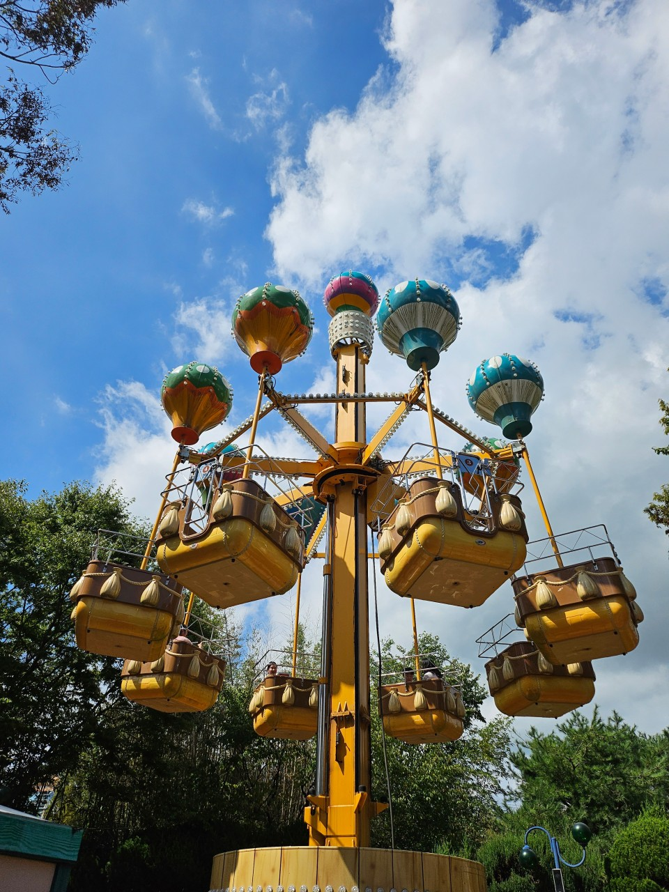
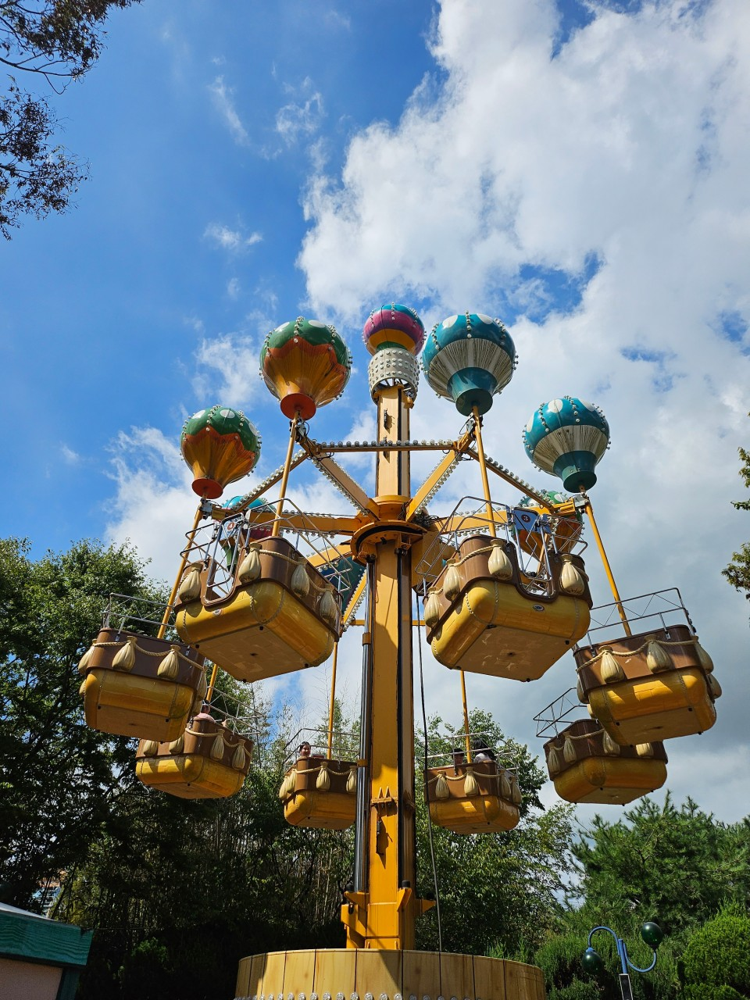

데이트 코스로 유명한 남산타워에는 사랑의 자물쇠 를 걸 수 있도록 자물쇠또한 판매하고 있다
이곳에 자물쇠를 걸면 사랑이 이루어 질 지도?| 층 수 | 시설 | 비고 |
|---|---|---|
| 타워 7층 | 엔그릴/기계실 | 양식당 '엔그릴'이며 이곳에서는 개성과 인천의 관측도 가능하다. 특히 이곳은 48분당 한바퀴를 도는 형태로 되어있다. |
| 타워 6층 | N칼국수,전망대 | N칼국수식당은 2015년 만들어 주인사업이고, 50인의 고객을 수용할 수 있다. 또한 휴전선까지 관측 가능하다 |
| 타워 5층 | 전망대, N기프트, N포토, 위니비니 | 디지털 전망대와 상행 엘리베이터가 있다. |
| 타워 4층 | 전망대, N포토 스튜디오, 하늘 화장실, 투썸커피 | 아날로그 전망대와 하행 엘리베이터가 있다. |
| 타워 3층 | 한쿡 | 뷔페식 한식당 '한쿡'이다. 이곳에서는 서울 시내까지만 보인다. |
| 타워 2층 | 루프테라스, 더 플레이스 다이닝 | 루프테라스, 더 플레이스 다이닝이 있다. |
| 타워 1층 | 치켓부스, 푸드오클락, N버거, N테라스, N기프트, 투썸커피, 올리브영, 포토 스토리 | N으로 시작하는 명칭들이 있다. |
| 5층 | 전망대 가는 길, 헬로키티아일랜드, 썬토이 박물관, 안내데스크, N기프트, N스위트바, 투썸커피, 화장실 | N으로 시작하는 명칭들이 있다. |
| 4층 | 계절밥상, 게임플라자, 호식이두마리치킨, 아참, 러브터널, 석양존, 스타토토, 스타포토, 포토카드사진기, 유후랜드, 올레드 웨이브, 3D체험관, 화장실 | 게임방, 치킨집, 미디어 시설 등이 있다. |
| 3층 | 방송관계시설 | 일반인이 접근할 수 없게끔 엘리베이터와 계단 등이 모두 통과하는데 방송관계시설이 위치하여 일반인은 들어갈 수 없다는 설명이 외부 계단 등에 붙어 있다. 추측컨대 탑 맨 위의 안테나와 연결된 전파 송출 장비가 있는 것으로 보인다. |
| 2층 | 본 우리반상, 사랑의서약 사진기, 올레드 서클, 화장실 | 본 우리반상, 사랑의서약 사진기, 올레드 서클, 화장실이 있다. |
| 1층 | 스타벅스, K명품관, 솔나라, 공차, 서울타워 기념품샵, 린린랜드 프로포즈 계단, 사랑의서약 사진기, 올레드 터널, 올레드 파노라마, 반월당고로케, 화장실 | 커피집, 기념품샵 등이 있어 화장실도 있다. |
| 지하 1층(로비) | 한복문화체험관 | 대한민국의 전통인 한복문화를 체험할 수 있다. |

 


수도권 놀이동산보다 더욱 스릴있는 데이트가 가능한 경주월드, 드라켄, 관람차, 허리케인으로 유명하다
경주까지 왔는데 안들어갈 순 없겠죠?
무서운 거 못타면..안오는게 나을지도


겨울에 빠질 수 없는 스포츠로 알려진 스키장 추운 겨울, 오순도순 이색스포츠 즐기기 좋다
해돋이도 볼 수 있는 곳
1박할게 아니라면...운전하기엔 너무 멀수도
| 제목1 | 제목2 | 제목3 | |
|---|---|---|---|
| 내용1 | 내용2 | 내용2 | |